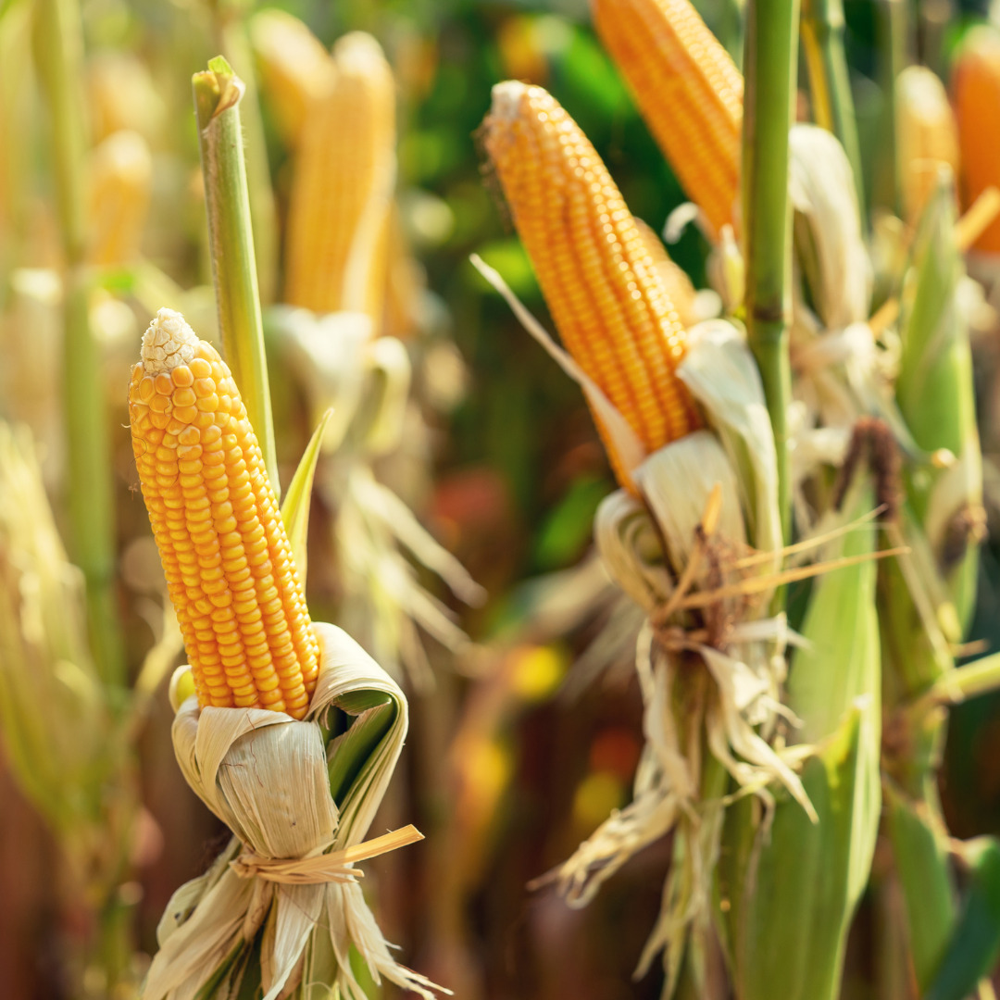

< Hasil Rekomendasi
⚙️ Menganalisis data tanah...

Tanaman Padi (Oryza sativa)
🌾 Panduan Budidaya - Panen
1
Pemilihan Benih
- Gunakan benih unggul bersertifikat (Inpari, IR64).
- Rendam benih di air garam, buang yang mengapung.
2
Penyemaian
- Rendam benih 24 jam dan inkubasi selama 48 jam.
- Semai di bedengan selama 18-22 hari.
3
Penanaman
- Pindah tanam bibit dengan kedalaman 2-3 cm.
- Gunakan sistem Jajar Legowo untuk hasil optimal.
4
Pemeliharaan
- Pupuk NPK pada hari ke-15 dan ke-35.
- Jaga ketinggian air dan bersihkan gulma secara rutin.
5
Panen
- Panen saat 95% malai padi sudah menguning merata.
- Potong pangkal malai dan segera lakukan perontokan.

Tanaman Jagung (Zea mays)
🌽 Panduan Budidaya - Panen
1
Pemilihan Benih
- Pilih varietas hibrida tahan penyakit bulai.
- Pastikan benih memiliki persentase tumbuh >90%.
2
Penyemaian
- Tanam langsung di lahan atau gunakan tray semai.
- Pastikan media semai kaya akan nutrisi organik.
3
Penanaman
- Tanam sedalam 5cm dengan jarak tanam 75x20 cm.
- Isi satu lubang tanam dengan satu benih jagung.
4
Pemeliharaan
- Lakukan pembumbunan tanah pada pangkal batang.
- Berikan pupuk Urea/NPK agar batang kokoh.
5
Panen
- Panen saat klobot mengering dan biji terasa keras.
- Pastikan muncul titik hitam (black layer) di biji.

Tanaman Tebu (Saccharum officinarum)
🎋 Panduan Budidaya - Panen
1
Pemilihan Benih
- Gunakan bibit stek dari batang muda (6-8 bulan).
- Pilih stek yang memiliki 2-3 mata tunas aktif.
2
Penyemaian
- Semai stek di bedengan datar secara bersambung.
- Lakukan penyiraman rutin hingga tunas muncul merata.
3
Penanaman
- Pindahkan ke juringan sedalam 25 cm.
- Tutup stek dengan tanah tipis agar tunas mudah keluar.
4
Pemeliharaan
- Lakukan klentek (pembuangan daun kering) berkala.
- Waspadai hama penggerek batang dan penyakit karat.
5
Panen
- Tebang tebu saat rendemen gula mencapai maksimal.
- Potong serapat mungkin dengan tanah (pangkal manis).